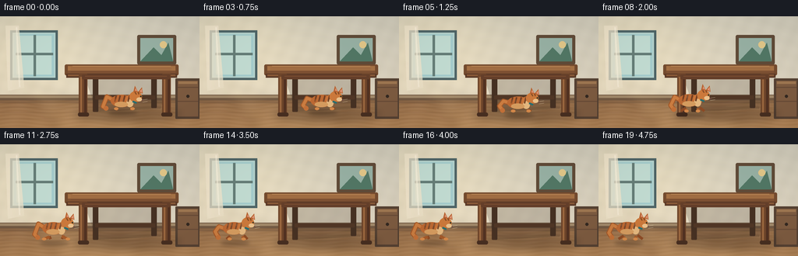
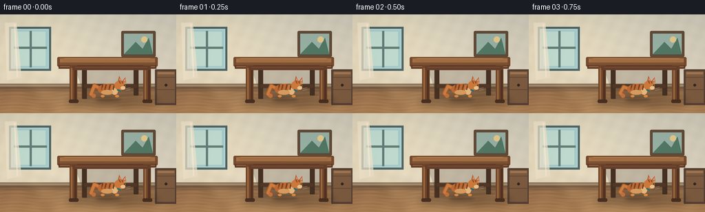
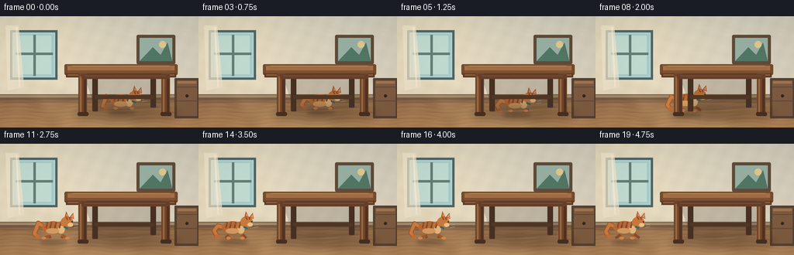
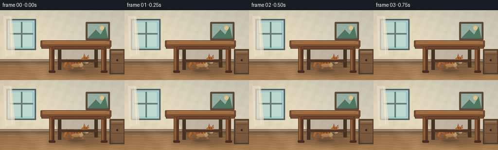

CODING AGENTS AS PIXEL WORLD MODELS
traex/DeepSeek-V4.1-Flash · dynamic_spatial_relationship_0015
点击播放 · 原生 RGB 像素
逐轮保存的候选
回放视频、检查图与代码变化。
每份候选均可单独播放。实际图片检查记录在下方工具轨迹中。
候选 01播放与检查图
点击播放 · 原生 RGB 像素


展开代码变化
--- 上一保存版本
+++ 本次保存版本
@@ -0,0 +1,332 @@
+"""Generate a short, hand-rendered clip of a cat moving out from under a table."""
+
+from pathlib import Path
+
+import numpy as np
+from PIL import Image, ImageDraw, ImageFilter
+
+import artifact_io
+
+
+W, H, FPS, N = 256, 144, 4, 20
+SS = 4 # supersampling factor for clean silhouettes and readable details
+ROOT = Path(__file__).resolve().parent
+
+
+def rr(draw, box, radius, fill, outline=None, width=1):
+ draw.rounded_rectangle(tuple(round(v * SS) for v in box), radius=round(radius * SS),
+ fill=fill, outline=outline, width=round(width * SS))
+
+
+def ell(draw, box, fill, outline=None, width=1):
+ draw.ellipse(tuple(round(v * SS) for v in box), fill=fill, outline=outline,
+ width=round(width * SS))
+
+
+def line(draw, points, fill, width=1, joint="curve"):
+ draw.line([(round(x * SS), round(y * SS)) for x, y in points],
+ fill=fill, width=max(1, round(width * SS)), joint=joint)
+
+
+def poly(draw, points, fill, outline=None):
+ draw.polygon([(round(x * SS), round(y * SS)) for x, y in points],
+ fill=fill, outline=outline)
+
+
+def lerp(a, b, t):
+ return a + (b - a) * t
+
+
+def smooth(t):
+ t = np.clip(t, 0.0, 1.0)
+ return float(t * t * (3.0 - 2.0 * t))
+
+
+def make_background():
+ """Painterly interior background with warm window light and quiet detail."""
+ img = Image.new("RGB", (W * SS, H * SS), "#ddd2bd")
+ px = np.empty((H * SS, W * SS, 3), dtype=np.float32)
+ yy, xx = np.mgrid[0:H * SS, 0:W * SS].astype(np.float32)
+ xn, yn = xx / (W * SS), yy / (H * SS)
+
+ # Pale plaster wall, warmed near the window.
+ wall_top = np.array([207, 202, 185], np.float32)
+ wall_bottom = np.array([226, 215, 194], np.float32)
+ wall = wall_top * (1 - yn[..., None]) + wall_bottom * yn[..., None]
+ glow = np.exp(-(((xn - 0.13) / 0.42) ** 2 + ((yn - 0.30) / 0.62) ** 2))
+ wall += glow[..., None] * np.array([19, 14, 3], np.float32)
+ noise = (np.sin(xx * 0.071 + yy * 0.033) * 1.8 +
+ np.sin(xx * 0.023 - yy * 0.087) * 1.1)
+ wall += noise[..., None]
+ px[:] = wall
+
+ # Wood floor with long, restrained grain.
+ floor_y = int(H * SS * 0.73)
+ f = np.clip((yy - floor_y) / (H * SS - floor_y), 0, 1)
+ base = np.array([152, 112, 76], np.float32)
+ warm = np.array([177, 132, 87], np.float32)
+ floor = base * (1 - f[..., None]) + warm * f[..., None]
+ grain = (np.sin((yy - floor_y) * 0.32 + np.sin(xx * 0.018) * 2.4) * 3.2 +
+ np.sin(xx * 0.043 + yy * 0.021) * 2.0)
+ floor += grain[..., None]
+ mask = yy >= floor_y
+ px[mask] = floor[mask]
+
+ img = Image.fromarray(np.uint8(np.clip(px, 0, 255)))
+ d = ImageDraw.Draw(img, "RGBA")
+
+ # Baseboard and floor contact shadow.
+ d.rectangle((0, 101 * SS, W * SS, 108 * SS), fill=(116, 91, 68, 255))
+ d.rectangle((0, 102 * SS, W * SS, 105 * SS), fill=(164, 139, 108, 255))
+ d.rectangle((0, 108 * SS, W * SS, 112 * SS), fill=(83, 63, 48, 55))
+ for y in (111, 117, 124, 132):
+ d.line((0, y * SS, W * SS, y * SS), fill=(99, 69, 49, 34), width=SS)
+
+ # Sunlit window on the left; the warm light motivates the scene.
+ d.rectangle((13 * SS, 18 * SS, 74 * SS, 82 * SS), fill=(79, 101, 103, 255))
+ d.rectangle((16 * SS, 21 * SS, 71 * SS, 79 * SS), fill=(181, 211, 205, 255))
+ d.rectangle((18 * SS, 23 * SS, 69 * SS, 77 * SS), fill=(164, 204, 204, 255))
+ d.rectangle((21 * SS, 25 * SS, 66 * SS, 75 * SS), fill=(194, 220, 210, 255))
+ d.rectangle((43 * SS, 24 * SS, 46 * SS, 77 * SS), fill=(102, 126, 120, 255))
+ d.rectangle((20 * SS, 47 * SS, 68 * SS, 50 * SS), fill=(102, 126, 120, 255))
+ # Translucent curtain edge.
+ poly(d, [(7, 12), (24, 12), (31, 92), (10, 96)], (242, 230, 205, 185))
+ line(d, [(21, 14), (25, 91)], (255, 246, 226, 130), 2)
+
+ # A little framed landscape, deliberately low contrast.
+ rr(d, (176, 24, 226, 62), 2, (96, 75, 56, 255))
+ d.rectangle((180 * SS, 28 * SS, 222 * SS, 58 * SS), fill=(151, 176, 163, 255))
+ poly(d, [(180, 58), (197, 40), (207, 50), (216, 34), (222, 58)],
+ (82, 119, 101, 255))
+ ell(d, (205, 32, 214, 41), (226, 198, 136, 255))
+
+ # Low cabinet on the right gives depth without competing with the action.
+ rr(d, (225, 80, 257, 132), 1, (86, 66, 51, 255))
+ d.rectangle((228 * SS, 83 * SS, 254 * SS, 129 * SS), fill=(126, 92, 65, 255))
+ d.rectangle((229 * SS, 84 * SS, 253 * SS, 87 * SS), fill=(160, 120, 82, 255))
+ for yy0 in (91, 109):
+ d.rectangle((228 * SS, yy0 * SS, 254 * SS, (yy0 + 1) * SS),
+ fill=(74, 53, 42, 110))
+ d.ellipse((239 * SS, 101 * SS, 243 * SS, 105 * SS), fill=(52, 41, 33, 255))
+
+ # Soft cast light and a few fine floor-board seams.
+ overlay = Image.new("RGBA", img.size, (0, 0, 0, 0))
+ od = ImageDraw.Draw(overlay)
+ od.polygon([(15 * SS, 83 * SS), (97 * SS, 107 * SS),
+ (204 * SS, 144 * SS), (76 * SS, 144 * SS)],
+ fill=(255, 223, 163, 24))
+ overlay = overlay.filter(ImageFilter.GaussianBlur(7 * SS))
+ img = Image.alpha_composite(img.convert("RGBA"), overlay).convert("RGB")
+ return img
+
+
+def draw_table(img, under_cat_mask=None):
+ """Draw a sturdy table, preserving a depth order appropriate for its view."""
+ d = ImageDraw.Draw(img, "RGBA")
+ # Soft contact shadow beneath the tabletop.
+ shadow = Image.new("RGBA", img.size, (0, 0, 0, 0))
+ sd = ImageDraw.Draw(shadow)
+ sd.ellipse((94 * SS, 118 * SS, 231 * SS, 135 * SS), fill=(48, 33, 23, 70))
+ shadow = shadow.filter(ImageFilter.GaussianBlur(5 * SS))
+ img.paste(Image.alpha_composite(img.convert("RGBA"), shadow).convert("RGB"), (0, 0))
+ d = ImageDraw.Draw(img, "RGBA")
+
+ # Back legs sit slightly darker and above the floor.
+ rr(d, (119, 74, 126, 123), 1, (74, 50, 35, 255))
+ rr(d, (194, 72, 201, 118), 1, (74, 50, 35, 255))
+ # Rear stretcher.
+ rr(d, (122, 102, 199, 107), 1, (87, 58, 39, 255))
+
+ # Under-table darkness makes the initial hiding place explicit.
+ poly(d, [(109, 79), (218, 77), (206, 119), (124, 123)],
+ (54, 43, 34, 48))
+
+ # Table top, front edge, and subtle grain.
+ rr(d, (83, 62, 229, 76), 2, (117, 76, 47, 255))
+ d.rectangle((87 * SS, 64 * SS, 225 * SS, 70 * SS), fill=(165, 113, 69, 255))
+ d.rectangle((87 * SS, 70 * SS, 225 * SS, 73 * SS), fill=(129, 83, 52, 255))
+ d.rectangle((85 * SS, 74 * SS, 227 * SS, 79 * SS), fill=(91, 58, 40, 255))
+ d.rectangle((87 * SS, 75 * SS, 225 * SS, 77 * SS), fill=(138, 91, 57, 255))
+ for y, a in ((66, 45), (68, 30), (71, 40)):
+ d.line((91 * SS, y * SS, 220 * SS, (y + 1) * SS),
+ fill=(83, 53, 37, a), width=SS)
+ # Tabletop highlights.
+ d.line((93 * SS, 64 * SS, 219 * SS, 64 * SS),
+ fill=(205, 154, 102, 130), width=SS)
+ # Front legs, with narrow inner shading and foot pads.
+ for x0 in (101, 208):
+ rr(d, (x0, 74, x0 + 11, 127), 1, (111, 70, 43, 255))
+ d.rectangle(((x0 + 2) * SS, 78 * SS, (x0 + 4) * SS, 124 * SS),
+ fill=(157, 105, 64, 255))
+ d.rectangle(((x0 + 7) * SS, 78 * SS, (x0 + 10) * SS, 124 * SS),
+ fill=(82, 50, 34, 255))
+ rr(d, (x0 - 1, 124, x0 + 13, 129), 2, (72, 47, 33, 255))
+ # Front apron.
+ rr(d, (105, 75, 218, 81), 1, (101, 63, 42, 255))
+ d.line((109 * SS, 77 * SS, 214 * SS, 77 * SS),
+ fill=(156, 100, 60, 110), width=SS)
+ return img
+
+
+def draw_cat(img, x, y, phase, crouch=0.0, facing_left=True, scale=1.0):
+ """Draw a ginger tabby with a readable side silhouette and articulated legs."""
+ layer = Image.new("RGBA", img.size, (0, 0, 0, 0))
+ d = ImageDraw.Draw(layer, "RGBA")
+ s = scale
+
+ # Cat-local coordinates; positive x points in the facing direction.
+ def P(dx, dy):
+ return (x + facing_left * dx * s, y + dy * s)
+
+ # Ground shadow stays anchored to the paws.
+ sh = Image.new("RGBA", img.size, (0, 0, 0, 0))
+ sd = ImageDraw.Draw(sh)
+ sd.ellipse(((x - 20 * s) * SS, (y + 1 * s) * SS,
+ (x + 17 * s) * SS, (y + 6 * s) * SS),
+ fill=(48, 31, 23, 80))
+ sh = sh.filter(ImageFilter.GaussianBlur(2.2 * SS))
+ img.paste(Image.alpha_composite(img.convert("RGBA"), sh).convert("RGB"), (0, 0))
+ d = ImageDraw.Draw(img, "RGBA")
+
+ # Running gait: alternating fore/hind pairs with a compressed airborne beat.
+ gait = np.sin(phase)
+ lift = max(0.0, -np.cos(phase))
+ bob = 1.2 * np.sin(2 * phase) * (1 - crouch)
+ body_y = y - 14 * s + bob + 7 * crouch
+ tail_wave = np.sin(phase - 0.8)
+
+ # Tail, drawn behind the body.
+ t0 = P(-10, -14 + 4 * crouch)
+ t1 = P(-22, -20 + 5 * crouch + 2 * tail_wave)
+ t2 = P(-27, -10 + 5 * crouch - 2 * tail_wave)
+ t3 = P(-23, -4 + 2 * crouch)
+ line(d, [t0, t1, t2, t3], (166, 91, 43, 255), 6.2 * s)
+ line(d, [t0, t1, t2, t3], (205, 126, 65, 255), 4.0 * s)
+ ell(d, (t3[0] - 3 * s, t3[1] - 3 * s, t3[0] + 3 * s, t3[1] + 3 * s),
+ (196, 113, 57, 255))
+
+ # Far legs, darker to separate them from the near pair.
+ far_color = (142, 76, 38, 255)
+ front_swing = gait * 5 * s * (1 - crouch)
+ hind_swing = -gait * 5 * s * (1 - crouch)
+ f_far0 = P(10, -7 + 5 * crouch)
+ f_far1 = P(13 + front_swing, -2)
+ line(d, [f_far0, f_far1], far_color, 3.2 * s)
+ h_far0 = P(-8, -6 + 5 * crouch)
+ h_far1 = P(-11 + hind_swing, -2)
+ line(d, [h_far0, h_far1], far_color, 3.4 * s)
+
+ # Body: low ellipses and a slightly raised shoulder.
+ body = Image.new("RGBA", img.size, (0, 0, 0, 0))
+ bd = ImageDraw.Draw(body, "RGBA")
+ cx, cy = P(-2, -16 + 5 * crouch)
+ ell(bd, (cx - 15 * s, cy - 8 * s, cx + 13 * s, cy + 8 * s),
+ (190, 106, 52, 255))
+ ell(bd, (cx + 4 * s, cy - 8 * s, cx + 16 * s, cy + 5 * s),
+ (203, 118, 58, 255))
+ # Cream chest/belly and tabby markings.
+ ell(bd, (cx + 5 * s, cy - 2 * s, cx + 14 * s, cy + 8 * s),
+ (230, 185, 128, 255))
+ ell(bd, (cx - 10 * s, cy + 1 * s, cx + 7 * s, cy + 8 * s),
+ (215, 157, 96, 255))
+ for dx in (-10, -5, 1, 7):
+ xx0, yy0 = P(dx, -23 + 5 * crouch)
+ xx1, yy1 = P(dx - 2, -15 + 5 * crouch)
+ line(bd, [(xx0, yy0), (xx1, yy1)], (126, 68, 35, 185), 2.0 * s)
+ img.paste(Image.alpha_composite(img.convert("RGBA"), body).convert("RGB"), (0, 0))
+ d = ImageDraw.Draw(img, "RGBA")
+
+ # Near legs.
+ near = (166, 91, 43, 255)
+ f0 = P(8, -6 + 5 * crouch)
+ f1 = P(11 - front_swing, -2)
+ line(d, [f0, f1], near, 3.8 * s)
+ h0 = P(-8, -5 + 5 * crouch)
+ h1 = P(-10 - hind_swing, -2)
+ line(d, [h0, h1], near, 4.0 * s)
+ for foot in (f1, h1):
+ ell(d, (foot[0] - 2.8 * s, foot[1] - 1.7 * s,
+ foot[0] + 2.8 * s, foot[1] + 1.7 * s), (214, 138, 75, 255))
+
+ # Head, ears, face. Slight forward tilt sells the running direction.
+ hx, hy = P(15, -23 + 7 * crouch + bob * 0.4)
+ ell(d, (hx - 8 * s, hy - 7 * s, hx + 8 * s, hy + 7 * s),
+ (205, 122, 60, 255))
+ # Ears.
+ ear1 = [P(12, -29 + 7 * crouch), P(14, -37 + 7 * crouch),
+ P(18, -29 + 7 * crouch)]
+ ear2 = [P(18, -29 + 7 * crouch), P(23, -35 + 7 * crouch),
+ P(24, -27 + 7 * crouch)]
+ poly(d, ear1, (185, 99, 49, 255))
+ poly(d, ear2, (185, 99, 49, 255))
+ poly(d, [P(14, -31 + 7 * crouch), P(15, -34 + 7 * crouch),
+ P(17, -30 + 7 * crouch)], (222, 148, 117, 255))
+ poly(d, [P(20, -30 + 7 * crouch), P(23, -33 + 7 * crouch),
+ P(23, -28 + 7 * crouch)], (222, 148, 117, 255))
+ # Forehead stripes and muzzle.
+ line(d, [P(14, -29 + 7 * crouch), P(16, -26 + 7 * crouch)],
+ (119, 66, 35, 210), 1.6 * s)
+ line(d, [P(18, -29 + 7 * crouch), P(19, -26 + 7 * crouch)],
+ (119, 66, 35, 210), 1.6 * s)
+ ell(d, (hx + 1 * s, hy + 1 * s, hx + 8 * s, hy + 6 * s),
+ (236, 195, 141, 255))
+ ell(d, (hx + 5.7 * s, hy - 1.2 * s, hx + 7.5 * s, hy + 0.5 * s),
+ (48, 55, 37, 255))
+ # Nose and whiskers.
+ poly(d, [P(23, -19 + 7 * crouch), P(25, -19 + 7 * crouch),
+ P(24, -17 + 7 * crouch)], (113, 69, 62, 255))
+ for yy0 in (-19, -16):
+ line(d, [P(24, yy0 + 7 * crouch), P(30, yy0 - 1 + 7 * crouch)],
+ (255, 237, 204, 190), 0.55 * s)
+ # Collar gives the head a clear visual anchor.
+ line(d, [P(11, -17 + 7 * crouch), P(16, -15 + 7 * crouch)],
+ (43, 111, 113, 255), 2.4 * s)
+ return img
+
+
+def render_frame(i):
+ img = make_background()
+
+ # Start fully under the tabletop; move out to the left, then settle.
+ t = i / (N - 1)
+ if i <= 4:
+ cat_x = 159 + 1.2 * np.sin(i * 0.8)
+ crouch = 0.78
+ phase = 0.35 * i
+ cat_y = 121
+ elif i <= 14:
+ u = smooth((i - 4) / 10)
+ cat_x = lerp(159, 47, u)
+ crouch = lerp(0.78, 0.05, smooth((i - 4) / 4))
+ phase = 0.35 * i + 10.5 * (i - 4) / 10
+ cat_y = 124
+ else:
+ u = smooth((i - 14) / 5)
+ cat_x = lerp(47, 40, u)
+ crouch = lerp(0.05, 0.0, u)
+ phase = 0.35 * i + 10.5 + 2.5 * u
+ cat_y = 124
+
+ # Table is drawn around the cat so its top and near legs create occlusion.
+ # The initial low pose is tucked between the table legs.
+ draw_table(img)
+ img = draw_cat(img, cat_x, cat_y, phase, crouch=crouch, facing_left=True)
+
+ # Warm sun pool and very light vignette unify the layers.
+ arr = np.asarray(img, dtype=np.float32)
+ yy, xx = np.mgrid[0:H * SS, 0:W * SS].astype(np.float32)
+ vignette = 1.0 - 0.10 * (((xx / (W * SS) - 0.52) ** 2) * 1.2 +
+ ((yy / (H * SS) - 0.50) ** 2) * 1.4)
+ arr *= np.clip(vignette, 0.84, 1.0)[..., None]
+ img = Image.fromarray(np.uint8(np.clip(arr, 0, 255)))
+ return np.asarray(img.resize((W, H), Image.Resampling.LANCZOS), dtype=np.uint8)
+
+
+def main():
+ frames = np.stack([render_frame(i) for i in range(N)])
+ artifact_io.save(frames, ROOT)
+ print(f"saved {frames.shape} RGB frames to {ROOT}")
+
+
+if __name__ == "__main__":
+ main()
候选 02播放与检查图
点击播放 · 原生 RGB 像素


展开代码变化
--- 上一保存版本
+++ 本次保存版本
@@ -307,10 +307,11 @@
phase = 0.35 * i + 10.5 + 2.5 * u
cat_y = 124
- # Table is drawn around the cat so its top and near legs create occlusion.
- # The initial low pose is tucked between the table legs.
+ # Draw the cat first, then the table. The tabletop and near legs occlude it
+ # while it is underneath; once left of the table edge, the full silhouette
+ # is revealed without any other compositing tricks.
+ img = draw_cat(img, cat_x, cat_y, phase, crouch=crouch, facing_left=True)
draw_table(img)
- img = draw_cat(img, cat_x, cat_y, phase, crouch=crouch, facing_left=True)
# Warm sun pool and very light vignette unify the layers.
arr = np.asarray(img, dtype=np.float32)
可观测工具轨迹
实际执行的命令与返回图片。
命令 1exit 0
/bin/bash -c 'cat prompt.txt'
命令 2exit 0
/bin/bash -c 'cat GENERATION_RULES.md'
命令 3exit 0
/bin/bash -c 'cat task_spec.json'
命令 4exit 0
/bin/bash -c "find . -maxdepth 2 -type f -printf '%p %s bytes\\n' | sort"
命令 5exit 0
/bin/bash -c "sed -n '1,260p' artifact_io.py"
命令 6exit 0
/bin/bash -c "sed -n '1,260p' player_template.html"
命令 7exit 0
/bin/bash -c "python - <<'PY' import importlib.util for m in ['numpy','PIL','cv2','imageio','scipy']: print(m, bool(importlib.util.find_spec(m))) PY"
命令 8exit 0
/bin/bash -c 'python generate.py'
命令 9exit 0
/bin/bash -c 'python generate.py'
命令 10exit 0
/bin/bash -c "python - <<'PY'
from PIL import Image
im=Image.open('inspection.png')
print(im.size)
PY"命令 11exit 0
/bin/bash -c "python - <<'PY'
from PIL import Image
import numpy as np
for i in [0,4,8,12,16,19]:
a=np.asarray(Image.open(f'frames/{i:02d}.png')).astype(int)
# rough cat palette: orange saturation and brightness; remove floor with tighter ratio
m=(a[:,:,0]>150)&(a[:,:,0]-a[:,:,1]>55)&(a[:,:,1]-a[:,:,2]>20)
ys,xs=np.where(m)
print(i, (xs.min(),ys.min(),xs.max(),ys.max()) if len(xs) else None, len(xs))
PY"命令 12exit 0
/bin/bash -c "python -m py_compile generate.py && python - <<'PY'
import numpy as np
from PIL import Image
frames=np.stack([np.asarray(Image.open(f'frames/{i:02d}.png')) for i in range(20)])
print('shape/dtype', frames.shape, frames.dtype)
print('range', int(frames.min()), int(frames.max()), 'unique-ish', len(np.unique(frames[0].reshape(-1,3),axis=0)))
d=np.abs(frames[1:].astype(int)-frames[:-1].astype(int))
print('frame deltas mean/max', d.mean(), d.max())
print('nonblank', [bool(np.std(f)>8) for f in frames])
PY"命令 13exit 0
/bin/bash -c 'ls -lh frames/*.png pixels.npz index.html inspection.png transition_check.png generate.py | tail -n 12'
命令 14exit 0
/bin/bash -c "python - <<'PY'
from pathlib import Path
from PIL import Image
import numpy as np
p=Path('.')
print('frame_count', len(list((p/'frames').glob('*.png'))))
z=np.load(p/'pixels.npz')['pixels']
print('pixel_tensor', z.shape, z.dtype)
print('html_bytes', (p/'index.html').stat().st_size)
print('inspection', Image.open(p/'inspection.png').size)
PY"命令 15exit 0
/bin/bash -c 'git status --short'
命令 16exit 0
/bin/bash -c "python - <<'PY'
from PIL import Image
import numpy as np
# Compute a crude orange-cat mask and its position relative to the table's left edge (~83 px).
for i in (0, 2, 4, 6, 8, 10, 12, 14, 16, 19):
a=np.asarray(Image.open(f'frames/{i:02d}.png')).astype(int)
m=(a[:,:,0]>150)&(a[:,:,0]-a[:,:,1]>55)&(a[:,:,1]-a[:,:,2]>20)
ys,xs=np.where(m)
print(f'{i:02d}', f'x={xs.min():3d}..{xs.max():3d}', f'y={ys.min():3d}..{ys.max():3d}', 'left_of_table', bool(xs.max()<83) if i>=14 else '-')
PY"保存候选 2 份；完成命令 16 次；可验证图片返回 0 张。原始 API 响应与完整日志保留在本地。